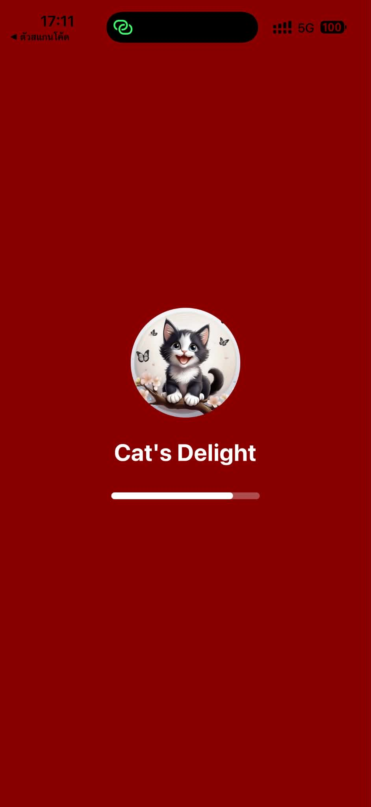
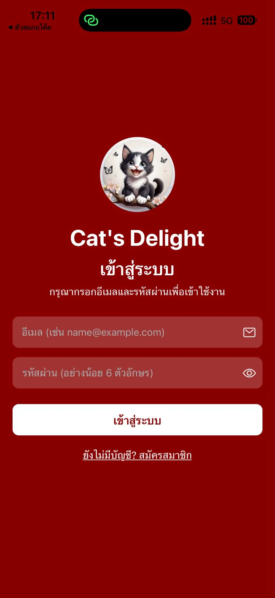
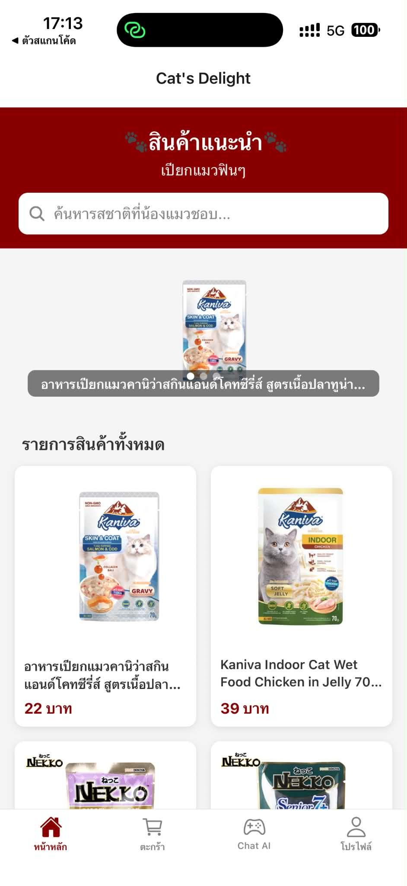
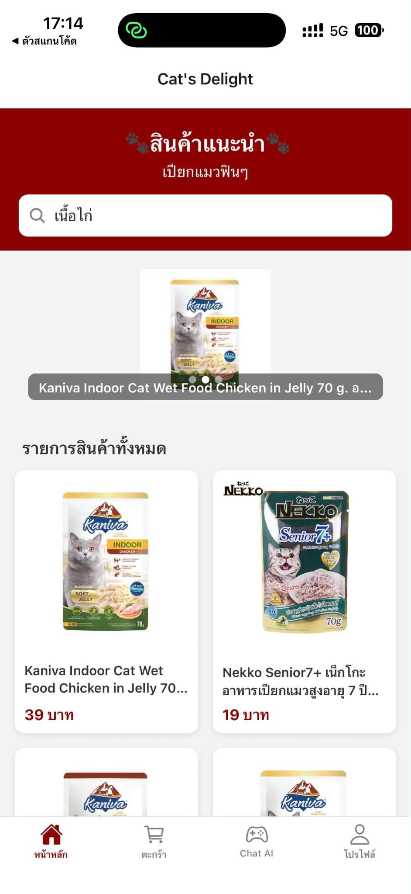
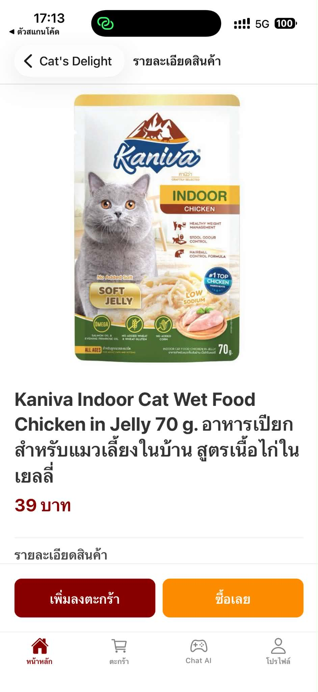
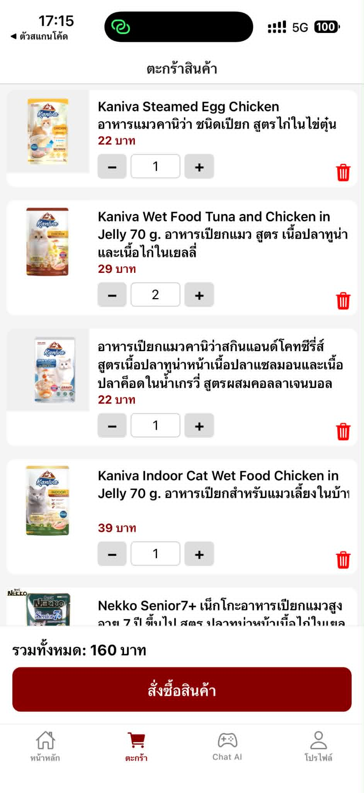
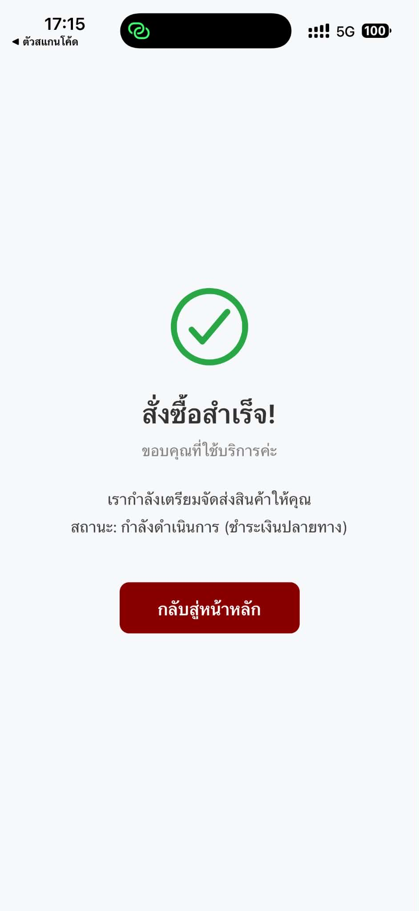
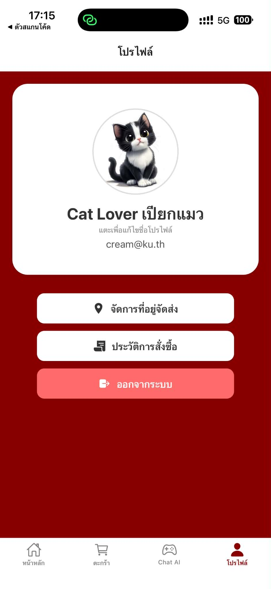
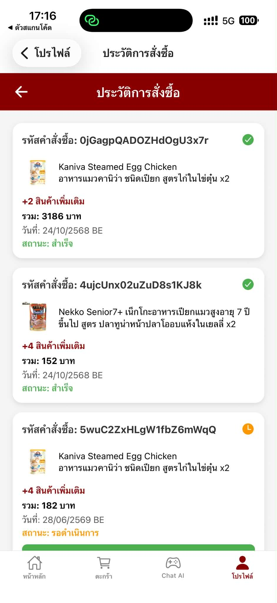

Cat Wet Food App UI Showcase
การวางโครงสร้างเส้นทางผู้ใช้ (User Flow) และออกแบบอินเตอร์เฟซแอปพลิเคชันจำหน่ายอาหารเปียกแมวสำเร็จรูป ชูแนวคิด Clean UI & Speed Shopping
พลิกโจทย์ Mini Project ให้ดูเป็นมืออาชีพ (UX Storytelling)
จากการศึกษาพฤติกรรมกลุ่มคนเลี้ยงสัตว์พบว่า "ทาสแมวส่วนใหญ่มีรสชาติอาหารเปียกที่แมวของตนชอบตายตัวอยู่แล้ว" และมักพบ Pain Point เรื่องความยุ่งยากในแอปพลิเคชันอีคอมเมิร์ซทั่วไปที่ต้องกดหลายขั้นตอนกว่าจะซื้อซ้ำได้สำเร็จ ฉันจึงนำอินไซต์นี้มาตั้งต้นเป็นแนวคิดในการพัฒนาโครงสร้างหน้าจอโมบายแอปชิ้นนี้:
1. Micro-Conversion Acceleration
ออกแบบปุ่มสัญลักษณ์บวกลบ (Quantity Adjuster) และปุ่มหยิบใส่ตะกร้าโดยตรงบนหน้ารวมสินค้า เพื่อข้ามขั้นตอนการกดคลิกซ้ำซ้อน
2. Visual Hierarchy & White Space
เว้นช่องไฟให้องค์ประกอบแบรนด์สีแดงทำงานร่วมกับภาพสินค้าได้เด่นชัดที่สุด การ์ดสินค้าสะอาดตา ลดภาระทางสายตาของผู้ใช้งาน (Cognitive Load)
Application Interface Showcase
ระบบคัดแยกกลุ่มแกลเลอรีอย่างเป็นสัดส่วน กดที่สมาร์ทโฟนเพื่อขยายซูม (ภาพสไลด์จะถูกจำกัดวงไว้เฉพาะหัวข้อนั้นๆ)
ทางเข้าแอปพลิเคชัน และสถาปัตยกรรมการลงทะเบียนอย่างง่าย
คลิกรูปมือถือเพื่อซูมขยายใหญ่ (สไลด์วนลูปเฉพาะรูปในกลุ่มนี้)


หน้าหลักการช้อปปิ้ง และการเข้าถึงตัวคัดกรองรสชาติอาหารเปียก
คลิกรูปมือถือเพื่อซูมขยายใหญ่ (สไลด์วนลูปเฉพาะรูปในกลุ่มนี้)


ระบบหน้ารายละเอียดโภชนาการ และการสรุปยอดตะกร้าสินค้าด่วน
คลิกรูปมือถือเพื่อซูมขยายใหญ่ (สไลด์วนลูปเฉพาะรูปในกลุ่มนี้)



โปรไฟล์ประวัติทาสแมว และระเบียบฟอร์มกรอกที่อยู่จัดส่ง
คลิกรูปมือถือเพื่อซูมขยายใหญ่ (สไลด์วนลูปเฉพาะรูปในกลุ่มนี้)


สิ่งที่ได้รับจากการพัฒนาโครงงานนี้
ออกแบบจาก Pain Point ผู้ใช้: ได้ศึกษาพฤติกรรมทาสแมวในชีวิตจริง แล้วนำข้อมูลมาสร้าง Flow ลดความซับซ้อนเพื่อให้ผู้ใช้กดซื้อของกินชิ้นเดิมซ้ำได้ไวที่สุด ฝึกเขียน React Native ร่วมกับ Expo Go: ได้ลองเปลี่ยนงานดีไซน์นิ่ง ๆ ใน Figma มาเขียนโค้ดขึ้นโครงสร้างหน้าจอฝั่งหน้าบ้าน (Frontend Showcase) และรันสแกนส่องทดสอบฟังก์ชันบนมือถือจริงผ่านแอป Expo Go